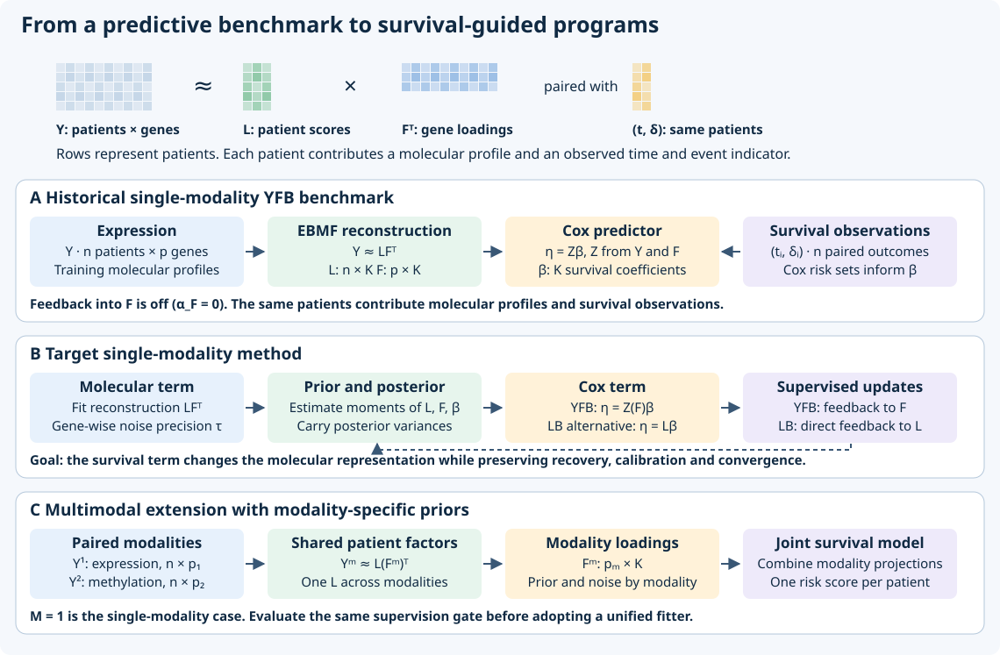
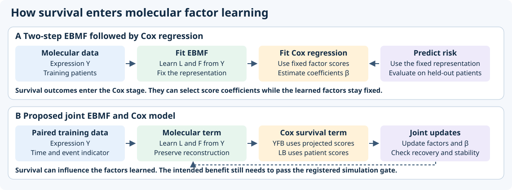
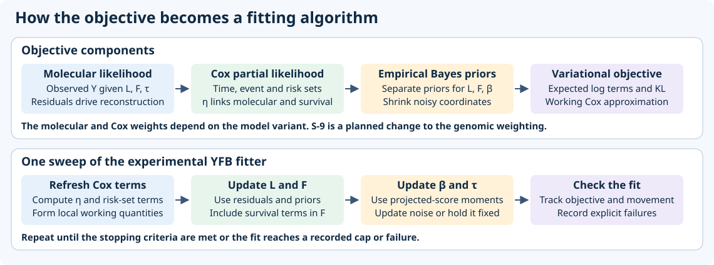
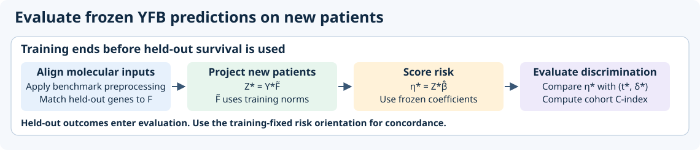
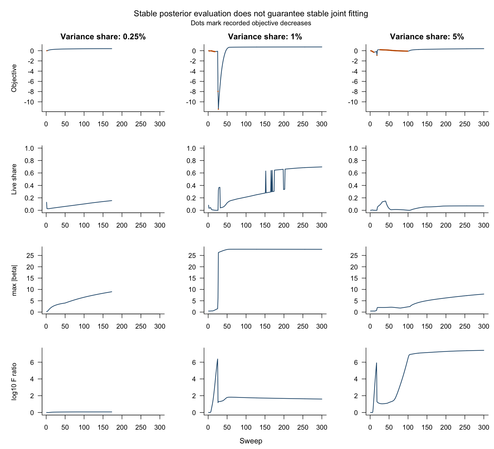
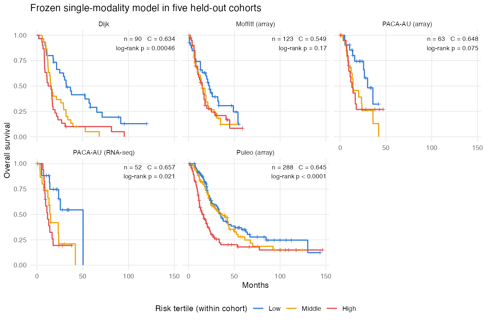

Current project state
Updated November 3, 2026. The project aims to learn molecular loadings that respond reliably to survival while preserving interpretable molecular programs.
Research status
| Stage | Work | Evidence or next checkpoint |
|---|---|---|
| Done | Historical benchmark, expression sensitivity, Round2 diagnostics | Historical external prediction benchmark and dated findings |
| In progress | Resolve survival supervision | Derive and register S-9, then assess recovery, false activity and convergence |
| Next | Independent supervision review | Review the registered results before merging the experimental fitter |
| Conditional | LB with fold-in prediction | Investigate if the YFB route stalls |
| Conditional | Unified multimodal model | Use insights from modality-specific priors or shared factors if they solve supervision at M = 1 |
| Conditional | R package | Start after the simulation gate and PDAC training cross-validation pass |
| In progress | Prelim Part III talk | Draft deck in presentation/prelim-slides/ (2026-11-03). Content freezes 2026-11-30, exam 2026-12-07 |
Model architecture

The historical YFB configuration estimates molecular loadings without survival feedback and uses projected expression to estimate survival coefficients. The target YFB formulation lets Cox information influence \(F\). In LB, the Cox predictor depends directly on \(L\). A unified extension uses shared patient scores and modality-specific loadings, priors, and noise. A result at \(M=1\) must pass the same supervision gate before the unified fitter becomes the common implementation.
The comparison draws on the visual separation of reconstruction and Cox regression in Young et al., DeSurv Figure 1. Figure 2 and supplement Figures S1–S3 motivate separating convergence, recovery and held-out performance in the evidence section. The diagrams depict this project’s EBMF implementations and research goals. The DeSurv figures are available in the DeSurv reproduction materials.
Two-step versus joint fitting

In the two-step baseline, EBMF learns molecular factors from expression. Cox regression then estimates coefficients for expression projected onto those fixed loadings. Coefficient shrinkage can select scores for prediction while the factor loadings stay fixed. In the proposed joint model, Cox information enters the factor updates themselves. YFB targets the feature loadings through the expression projection. LB supplies direct survival information to the patient scores, with an indirect effect on loadings through reconstruction. LB prediction estimates a new patient’s activities from expression with the training loadings fixed. Joint updates can change which programs are recovered at a fixed starting rank.
The historical YFB benchmark had zero survival feedback into the loadings. It uses its own priors and selection procedure, so it is distinct from the two-step comparator. Its external discrimination serves as the predictive reference. Testing the value of joint supervision requires matched two-step and joint fits with the same training splits and held-out evaluation, plus planted-factor recovery, false activity and convergence in simulation.
Fitting and prediction

Sampling model and empirical Bayes priors
For \(n\) patients, \(p\) molecular features and \(K\) factors, let \(Y\in\mathbb R^{n\times p}\), \(L\in\mathbb R^{n\times K}\) and \(F\in\mathbb R^{p\times K}\). The experimental single-modality fitter uses
\[ Y_{ij}\mid L,F,\tau_j\sim \mathcal N\!\left(\sum_{k=1}^K L_{ik}F_{jk},\tau_j^{-1}\right), \qquad h_i(t)=h_{0,s_i}(t)\exp(\eta_i). \]
The experimental reconstruction uses nonnegative expression on its fitted scale. For raw input, the fitter divides by within-cohort feature standard deviations without centering the reconstruction. It centers the expression only for the Cox projection.
Here \(s_i\) is the patient’s stratum, or a common stratum for an unstratified fit. With observed time \(t_i\) and event indicator \(d_i\), the Breslow Cox log partial likelihood is
\[ \ell_{\mathrm{Cox}}(\eta)=\sum_{i:d_i=1} \left[\eta_i-\log\sum_{r:t_r\ge t_i,\ s_r=s_i}\exp(\eta_r)\right]. \]
Tied events use the same risk set. YFB uses \(\eta=Z\beta\) with \(Z=Y_c F D\), where \(Y_c\) is centered expression and \(D_{kk}=\|E_q[F_{\cdot k}]\|_2^{-1}\) for a live loading column. The working projection treats \(D\) as fixed within a sweep and uses a finite scale for zero columns. LB instead uses \(\eta=L\beta\).
The experimental fit uses point-exponential priors for activities and loadings, and a shared point-normal prior for survival coefficients:
\[ \begin{aligned} L_{ik}\mid g_{Lk}&\sim g_{Lk}=(1-\pi_{Lk})\delta_0+ \pi_{Lk}\operatorname{Exp}(\lambda_{Lk}),\\ F_{jk}\mid g_{Fk}&\sim g_{Fk}=(1-\pi_{Fk})\delta_0+ \pi_{Fk}\operatorname{Exp}(\lambda_{Fk}),\\ \beta_k\mid g_\beta&\sim g_\beta=(1-\pi_\beta)\delta_0+ \pi_\beta\mathcal N(0,\sigma_\beta^2). \end{aligned} \]
The atom \(\delta_0\) places a point mass at zero, the \(\pi\)’s are slab probabilities, and the exponential parameters are rates. The fitter estimates the prior parameters by empirical Bayes. The default experimental coefficient fit bounds its shared prior parameters. Precision \(\tau_j\) is a point estimate updated from expected squared residuals, or held fixed in the fixed-noise diagnostic. In the multimodal extension, each input block \(Y^{(m)}\) has its own \(F^{(m)}\), loading prior and precision, with a shared \(L\). The allowed loading prior family can differ by modality.
Variational fitting criterion
Let \(q=q_Lq_Fq_\beta\) denote the factorized variational approximation, and let \(G_L,G_F,G_\beta\) denote the corresponding product priors above. For positive survival weight \(\gamma\), the unguarded experimental fit monitors the following local approximation:
\[ \begin{aligned} \widetilde{\mathcal L}(q) ={}& E_q[\log p(Y\mid L,F,\tau)] \\ &+\gamma\left[\ell_{\mathrm{Cox}}(E_q[\eta]) -\tfrac12\sum_i w_i\operatorname{Var}_q(\eta_i)\right]\\ &-\operatorname{KL}(q_L\Vert G_L) -\operatorname{KL}(q_F\Vert G_F) -\operatorname{KL}(q_\beta\Vert G_\beta). \end{aligned} \]
The \(w_i\) are the diagonal working curvatures. The Gaussian expectation uses posterior moments of both \(L\) and \(F\). This is a Cox working approximation, with a separate bound-based acceptance criterion in guarded runs. The bound holds with the projection scale fixed. Recomputing that scale between sweeps changes the criterion and limits what acceptance guarantees. The sweep computes Cox working quantities, updates \(L,F,\beta\) by factor, canonicalizes the factor scales and updates free precision. The frozen historical benchmark used zero loading feedback (\(\alpha_F=0\)) while still fitting survival coefficients. S-9 is planned. It would hold the Cox weight at one and reduce the molecular weight to test whether survival can influence loadings without the coefficient overconfidence seen with large Cox weights. The design calls for a fixed-noise pilot, a null check, and the original acceptance gate.

Training fixes the loading matrix, its column norms where used, and survival coefficients. Held-out expression is aligned to the training feature space under the benchmark preprocessing contract, including within-cohort standardization and the training loading norms where used. The projection gives a risk score for each patient. Concordance evaluates the ordering of comparable observed survival pairs using the training-fixed risk orientation.
Evidence
| Result | What it establishes |
|---|---|
| Historical YFB mean Harrell C-index 0.627 across five PDAC series (range 0.549–0.657) | Predictive benchmark with zero loading feedback. The principal two-step comparator averaged 0.601 and the rank-matched comparator 0.623. |
| Attempt 7 completed 360 fits, 153 nonconverged | The corrected shared-loading design failed the registered supervision gate |
| S-8 fixed noise prevented runaway residual growth in the tested designs | None of 12 fits passed the screen. One guarded fit converged and recovered the planted factor, with two false-active factors. |
The external rank sweep informed the choice of starting rank seven, and some PACA-AU donors recur across series. The benchmark comparisons are descriptive and cannot isolate the effect of survival feedback.
The registered simulation gate requires, at 2,000 features, at least three additional recoveries per ten paired datasets relative to the unsupervised fit in at least two variance cells, mean false-active count at most one, and at least 90% convergence. None of the tested joint weighting arms qualified. Recovery requires a match to the planted loading, an active survival coefficient and the correct sign. A false-active factor is an unmatched survival-active factor. In the weakest 2,000-feature cell, the existing canonical comparison recovered the planted program and converged in all ten replicates, with one false-active factor on average. That cell shows recovery was possible under the design.
The separate S-8 Gaussian reference flagged about 6.9 of seven truly null coefficients at a large likelihood weight, even with exact coefficient inference. This isolates a weighting issue in the Gaussian diagnostic.
See the October 30 chapter for saved tables and diagnostic plots.
Inspect the fixed diagnostic replays

These traces follow selected saved designs and are deterministic replays. Read the October 30 chapter for the normalization and the replay conditions.
Completed Results
9 of 23 evidence items documented. Each line of this checklist counts once. Checked historical or diagnostic items have a saved result, even when it was negative. Open items describe evidence still needed for the survival-supervised method. Publication readiness depends on the supervision gate and the final evidence, not on this count.
Re-verification required. Many checked results use the historical \(\alpha_F=0\) fit, which turns off survival feedback into the molecular loadings. Once a supervised fit passes the registered gate, re-verify the completed results against that fit before carrying them forward as evidence for the final method.
Methodology
Simulation
Real-data application
Biological characterization
Sensitivity and reproducibility
Conditional multimodal extension
The evidence categories draw on DeSurv main Figures 2–4 and supplement Figures S1–S10. Their examples include null and mixed simulations, initialization, rank selection, factor correspondence, training-derived risk thresholds, external cohort hazard ratios, subtype composition and the tradeoff between expression variance and survival contribution. The DeSurv figures are available in the DeSurv reproduction materials.
See the historical predictive result
The frozen configuration achieved mean concordance of 0.627 across five external dataset series. The curves compare within-cohort risk tertiles.

See the October 30 chapter for the experimental evaluation and the roadmap for the wider backlog.
Open decisions
Long-term home for the synthetic checkpoint archive. The options are to use the pinned repository revision or to store the files in a separate durable archive. The older checkpoints can be restored from the pinned revision, and the raw files remain in the checkout pending the decision.
Share your choice in the project chat to update this record.